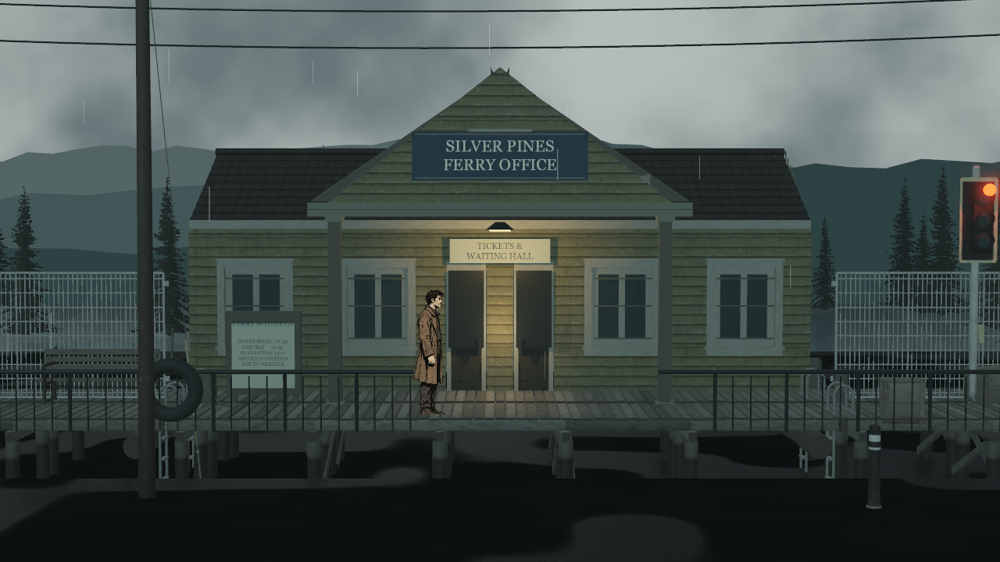
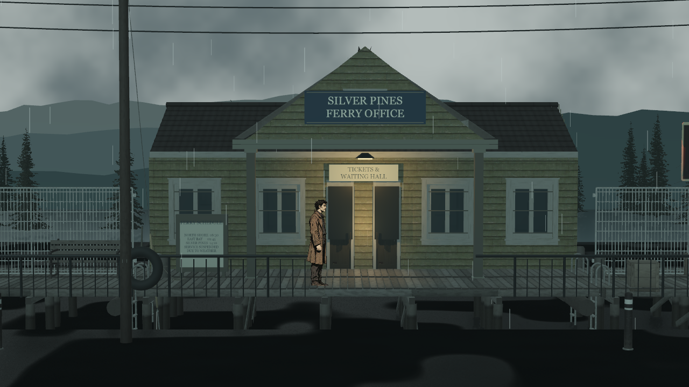
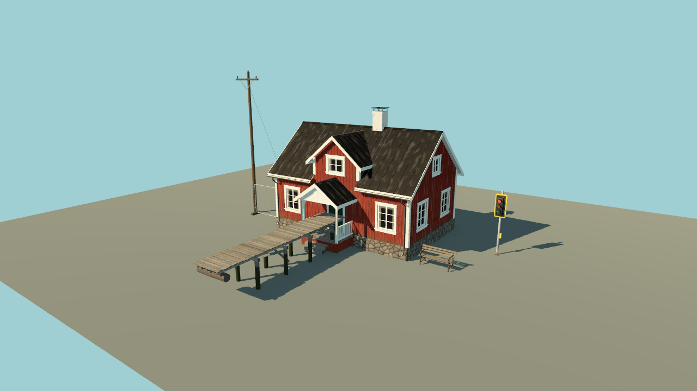

SIDEVIEW ENVIRONMENT STUDY · 2026 / 11 / 22
Silver Pines
渡口办公室局部
按你指定的新参考，重新组织一个横向 2.5D 场景：旧木办公室、湿栈道、围网、电杆、山林，以及可以左右走和跳跃的墨线人物。这轮布局直接参考渡口办公室，不再套用旧白盒。
可试玩初稿，供判断方向。 立体环境与人物已在 Godot 中运行；9 项局部控制器检查通过。门窗装饰、远景层次和湿地细节仍与原作有明显差距，尚未经过你的美术验收。


本稿已建立
- 单层两翼与中央高山墙门廊，灰绿横木板、蓝色招牌和暖门灯。
- 真实素材的窗、屋顶、栈道、围网、长椅、电杆、交通灯和货箱。
- 前景栏杆与轮胎、中景活动区、后侧岸边树木与远山；横移时有真实视差。
- 原创墨线人物六帧图集，左右行走、转身、跳跃与镜头跟随。
与参考的主要差距
- 檐口、门窗与招牌边框较简单，缺少原图更密集的装饰和临时杂物。
- 本稿为方格围网，原图为菱形网；木板磨损仍有重复。
- 远山较平、雾层不够丰富，湿地块状变化偏大。
- 人物动画是六帧局部试用，尚无完整角色动作系统。
这是一个可继续编辑的参考复现初稿，不能等同于原作的精细度。
实际移动与跳跃
同一次游戏运行中的关键帧。先向右走到木箱，被碰撞阻挡，再跳过并落地。
A / D 或左右方向键移动；Space 跳跃。页面展示静态关键帧，试玩请打开 Godot 工程。

这次管线的取舍
| 环节 | 实际完成与限制 |
|---|---|
| 参考 | 查看官方商店前六张截图，选择 Ferry Office 室外图；按可见的建筑比例、材质、照明与前后层制作。游戏官网。 |
| 真实素材 | Tevy CC0 模型库。整栋红色住宅经过实机试听后因一层半轮廓不符而淘汰；改用同系列墙、窗、门、山墙与瓦顶模块。实际下载的木栈道、围网及街道道具进入场景。 |
| 兼容处理 | 源文件逐份核对 SHA-256；解压 meshopt、解量化并将 KTX2 转 PNG，保留几何、UV 与源图集。打开交付工程无需转换工具或重新下载。 |
| 补制 | 内置 ImageGen 生成原创透明人物图集与旧横木板材质，作为场景资源使用；建筑主体仍是可编辑的素材模型。招牌、栏杆、轮胎与分层远山为本轮补件。 |
| 看图返修 | 修复围网/树叶 alpha、近景被雾冲灰、窗玻璃发白、硬阴影条带及保存时的重复模型；修订前与当前稿采用相同机位。早期正交稿另存档，不冒充同机位。 |
| 必要检查 | 导入、保存重开、四机位渲染以及9项实际输入/物理检查通过。保存时模型实例与子节点重复的问题已修复，当前导入与实机检查日志未见错误/警告；其他后端未测。技术检查不等于美术验收。 |
素材试听：为什么没有直接使用整栋住宅
红色住宅的窗与屋顶细节可用，但二层感与小门廊不匹配参考，因而改为模块装配。明亮试听照明用于检查素材，不代表目标天气。

打开工程与后续编辑
Godot 4.7.2 导入 experiments/silver-pines-study-20261122/project/project.godot，F5 打开 ferry_office.tscn。建筑、道具、背景、天气、人物分别分组，可以直接编辑。
玩法使用锁定 Z 轴的 CharacterBody3D：X 方向移动、Y 方向跳跃，与三维木箱碰撞。局部范围为办公室外侧；无战斗、交互或可进入的室内。
素材来源与哈希在任务目录的 assets.json；生成提示词在 project/art/；完整说明和复拍命令在 ENVIRONMENT.md。请勿在手改场景后运行旧 builder 覆盖成果。